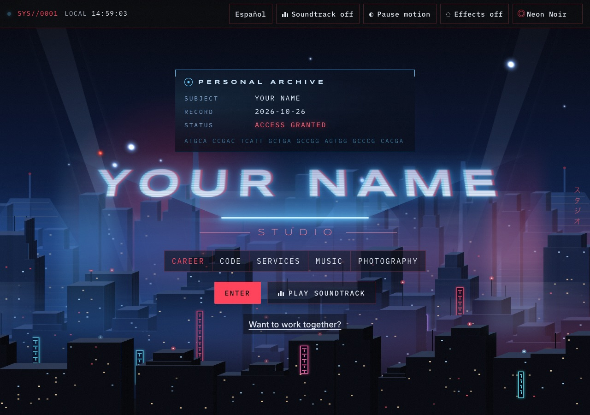
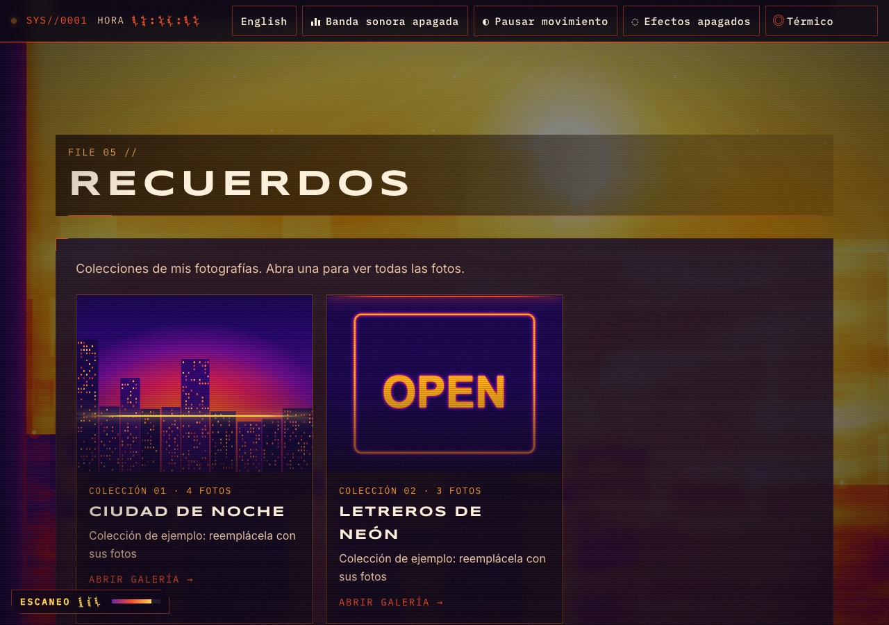
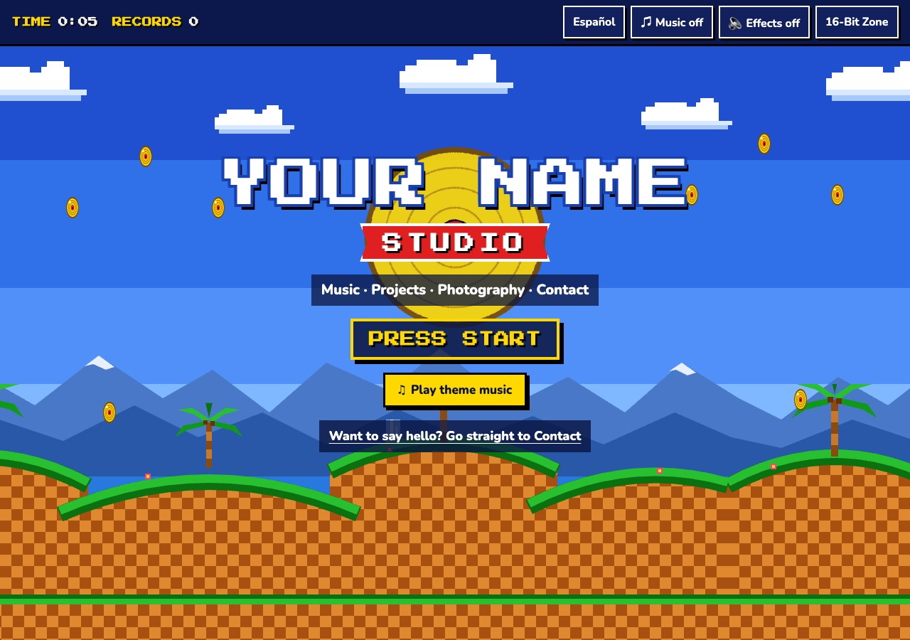

Retro Site Themes
Three free, ready-to-edit one-page websites for a portfolio or personal site. Each has an English/Spanish switch, a theme menu, an original soundtrack made in the browser, accessibility built in, and no build step: edit the text, upload, done.
Tres sitios web de una página, gratuitos y listos para editar, para un portafolio o un sitio personal. Cada uno tiene botón de inglés/español, menú de temas, una banda sonora original creada en el navegador y accesibilidad incorporada, sin pasos de compilación: edite el texto, súbalo y listo.
-

Neon Noir
A rainy, neon-lit night city with searchlights, flying cars and a dusty amber apartment view further down the page.
Una ciudad nocturna lluviosa con luces de neón, reflectores, autos voladores y una vista ámbar polvorienta más abajo en la página.
-

Thermal
Heat vision for Neon Noir: a heat-map filter over the scenery and photos, scan lines, a three-dot targeting laser, lock-on brackets and an original glyph alphabet for numbers.
Visión térmica para Neón Noir: filtro de mapa de calor sobre el paisaje y las fotos, líneas de escaneo, láser de tres puntos, corchetes que fijan el objetivo y un alfabeto de glifos original para los números.
-

16-Bit Zone
A 16-bit console-game title screen: pixel lettering, scrolling clouds and hills, a score display, collectible gold records and chiptune-style music.
Una pantalla de título de videojuego de 16 bits: letras pixeladas, nubes y colinas en movimiento, marcador, discos de oro coleccionables y música de estilo chiptune.
Use one for your own site
- Download this repository (Code → Download ZIP) or fork it on GitHub.
- Keep the template folder you like (or both: their theme menus link to each other).
- Edit the text in
index.htmlandjs/i18n.js(look forEDIT:comments), set your GitHub username at the top ofjs/main.js, and swap the placeholder images. - Publish it free with GitHub Pages. Step-by-step instructions are in the README.